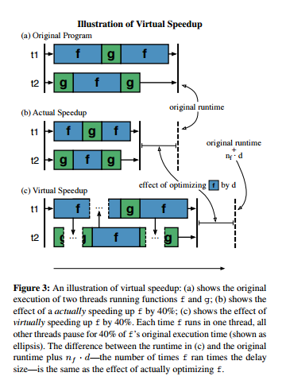

Jcoz
Java Causal Profiler
By Matthew Perron (mperron) and David Vernet (dcv)
© Copyright 2016 David Vernet and Matthew Perron all rights reserved Hosted on GitHub Pages — Theme by mattgraham
Summary
JCoz is the first ever causal Java profiler. That is, it is a profiler for Java programs that uses a new technique called "causal profiling" to identify performance bottlenecks in complex, parallel programs that run on the JVM. This website describes in detail how causal profiling works, and shows some speedup results we were able to obtain using JCoz. In particular, it shows our results in optimizing the Java H2 Database; a widely used, mature in-memory Java database engine. Finally, it shows that JCoz gets a runtime overhead of roughly 10-40% (matching major sampling profilers such as HPROF and JVisualVM).
Background
Optimizing parallel programs is very difficult, and there are often many moving parts to consider. For example, if threads are write sharing a global variable it can cause excessive interconnect traffic and cache misses. Or perhaps Ahmdal's law prevents us from reaching our performance goal before we even get started, causing days of optimization effort that will never improve the speed of your program. Even worse, it could happen that speeding up certain parts of your code might even cause a performance hit (for example, when speeding up a line of code causes increased lock contention). Is it possible to handle all of this complexity in a profiler, and provide accurate results so programmers know exactly where to look to optimize their parallel programs? It is -- with causal profiling.
JCoz is a causal Java profiler; that is, a tool for profiling multithreaded Java programs. A causal profiler detects how changing a line would affect performance using something called virtual speedup. At some frequency throughout the runtime of the program, we run an "experiment" in which we choose a line being executed among all threads (randomly), and a speedup amount between 0 - 100%, to measure how speeding up that line of code by the given speedup percent would affect overall program runtime. Ideally, during this experiment, when any thread enters the selected line, all other threads are suspended for a period of time depending on the speedup chosen for that experiment. However, we instead utilize sampling to avoid the excessive runtime overhead from having every thread pause every time it hits the line. To actually measure line speedup, we record the throughput achieved during the experiment and use it to determine how speeding up the line would affect throughput / runtime. Thus, by freezing the other threads and measuring how throughput changes, we have "virtually" sped the line being executed by the given thread.
The following caption is a useful visualization of virtual speedup (caption credited to Charlie Curtsinger and Emery Berger whose paper is cited in the references section):

The above approach to profiling multithreaded programs has many benefits over the traditional performance monitoring profilers. For example, observe the following toy program:

Now, observe the output of JCoz on the same program:

Here is another example of how JCoz provides more valuable profiling results than other profilers. Observe the following code:


Approach
Profiler Workflow
Our profiler follows this workflow when profiling a program:
- Start the program, and set a breakpoint (a "progress point") at a line in the program that was chosen by the user to measure throughput
- Wait for a given warmup period to avoid overhead during the initial part of a program where the progress point will not be hit
- Starting running experiments. An experiment includes the following steps:
- Choose a line for speedup randomly among the currently executing threads, as well as a random speedup between 0 - 100%
- Every 1ms, send a SIGPROF signal to all user threads, in which they check whether they are on the experiment line. If so, all other threads are frozen for a period of time dependent on the speedup chosen for this experiment, and the given thread continues to execute
- Throughout the runtime of the experiment, keep track of how many times a given "progress-point" line is hit by all threads. This progress point line is how we measure how throughput changes when we virtually speed up a line
- After a certain amount of time, end the experiment and write the metrics to a file buffer
- When the program has finished running, flush the file buffer
Platform
Our profiler is written in C++ as a Java Agent, and targets Linux machines with a JDK with Java >= 1.7 installed. Other than that, our project has no dependencies other than the standard C and C++ libraries. To interpret a profile output from our profiler, we used the original COZ profile plotter.
Implementation
In building our tool, we leveraged the JVM Tool Interface (JVMTI) to get thread stack traces, listen for when new user threads are created and existing threads are killed, map byte code instructions to source file line numbers, and set breakpoints. Though much of the interface was relatively straightforward and easy to use, we ran into a hurdle in obtaining stack traces in real time from the program. JVMTI only publicly exposes a GetStackTrace function that returns stack traces at "safe points". Had we been constrained to use this "safe" thread stack function, it would have severely degraded the utility of our profiler because it may have skipped important lines to profile, or caused us to wait for some indefinite amount of time before being given the stack trace (which would have caused our sampling logic to be completely unpredictable). For example, we observed that no safe points were being added in tight, expensive loops. To get around this issue, we used the undocumented AsyncGetStackTrace function to get stack traces in non-safe points. It took quite a lot of scaffolding and patchy code to properly use this function.
Another technique we used in our profiler was sampling. It would have required far too much overhead to listen to each instruction for every thread to see if a thread was executing an experiment line. Instead, we send all threads a SIGPROF signal every 1 ms. In the signal handler, each thread determines if it is executing the experiment line by calling AsyncGetStackTrace. If so, it notifies other threads to sleep by incrementing a global sleep counter. This provides a nice tuning knob for configuring the profiler, as we can easily adjust experiment duration and sampling frequency to tune the runtime overhead and profiling granularity of JCoz.
Results
We chose to measure performance with three different metrics:
- Does our profiler gave us accurate results for toy programs that exhibited various examples of parallel programming (i.e. the example given above, threads thrashing on locks, Ahmald's law with serial execution, etc)?
- How much overhead is incurred from using our profiler?
- Can we use the profiler to find optimizations in complex, mature, and widely used libraries?
Our first metric of success was our profiler's performance on simple Java programs that exhibited various paradigms of parallel programming. We were able to measure this by running our profiler on many different, easy to understand toy examples, and verifying that the profiler gave us the ouput we expected for all programs. We found that all examples were correctly profiled, though in some instances, many iterations of the program was required to build a large enough profile to have useful results. We ran our profiler on the following types of toy examples:
- Two non-contending threads with different runtimes (shown above)
- Multiple non-contending threads with exactly the same runtimes (equal speedup opportunities in all threads)
- Two threads with the same runtimes where one is waiting on a lock (essentially serial execution -- equal speedup opportunities found)
- Multiple threads thrashing on a single lock (significant speedup found for the small section of code where a thread held the lock)
Perhaps most importantly, we were able to optimize real libraries with our profiler. Specifically, we were able to optimize the Java H2 Database by 19% using the standard Dacapo Benchmark suite, and we also identified an opportunity for optimization on the high performance, highly parallel Universal Java Matrix Package by using blocking to take better advantage of the cache.
JCoz joins a community of existing Java profilers, including HPROF, JVisualVM,
Another metric of success for our profiler was the amount of runtime overhead incurred from using it. We found that our profiler was very lightweight, incurring roughly 10-40% runtime overhead for all programs that we profiled. Below is a comparison of the overhead of running different Java Profilers on the Dacapo H2 Benchmarking tool.
One of our main goals for this project was to take an application of which we had little knowledge, run our profiler, and make a meaningful improvment with little development time. We chose to profile the H2 TPCC benchmark using the Dacapo Java Benchmarking Suite. Our profile displayed the line as the best opportunity for throughput improvement with the following graph. We ran on muir, a machine with 264GB of DRAM and 4 Intel Intel Xeon E5-4650 2.70 GHz processors.

Using the above profile, we discovered that a Thread.sleep(...) call meant to implement backoff of a failed transaction before retrying was causing an significant drop in throughput performance. By reducing the wait time from a random time between 1 and 10 ms to 1-10 microseconds, we observed a throughput increase of about 19%. We had no knowledge of this codebase before running our profiler, and this allowed us to improve the throughput of the benchmark in about an hour after viewing the profile results.
Here is the line we identified for speedup (it was the Thread.sleep(...) call):

To speed up the line of code, we simply lowered the amount of time to randomly sleep on a failed transaction:

The results of the end to end runtime of the benchmark before and after optimization are displayed below.

We feel this significant improvment with little development effort demonstrates the utility of this form of profiling, and we are excited to continue improving JCoz.